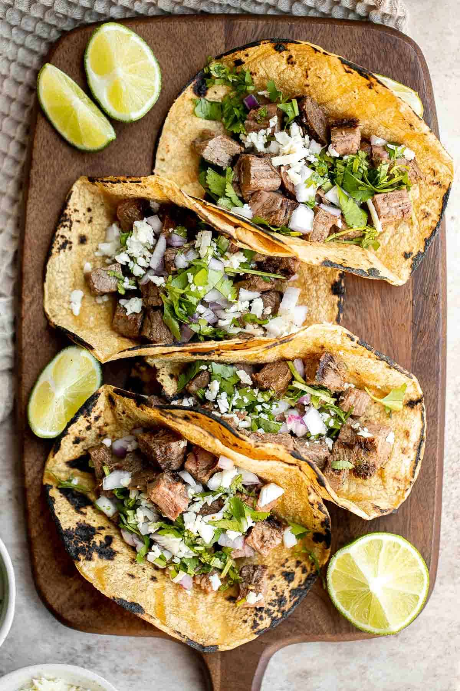

Tacos Recipe

Description
Discover the joy of authentic street tacos with our easy-to-follow recipe.
Dive into the world of Mexican flavors as you create a delicious street taco
that's perfect for any occasion. From sizzling meats to fresh toppings, this
recipe will have you savoring the essence of street food right at home.
Ingredients
- 2 tablespoons reduced sodium soy sauce
- 2 tablespoons freshly squeezed lime juice
- 2 tablespoons canola oil, divided
- 3 cloves garlic, minced
- 2 teaspoons chili powder
- 1 teaspoon ground cumin
- 1 teaspoon dried oregano
- 1 ½ pounds skirt steak, cut into 1/2-inch pieces
- 12 mini flour tortillas, warmed
- ¾ cup diced red onion
- ½ cup chopped fresh cilantro leaves
- 1 lime, cut into wedges
Steps
- In a medium bowl, combine soy sauce, lime juice, 1 tablespoon canola oil, garlic, chili
powder, cumin and oregano.
- In a gallon size Ziploc bag or large bowl, combine soy sauce mixture and steak; marinate
for at least 1 hour up to 4 hours, turning the bag occasionally.
- Heat remaining 1 tablespoon canola oil in a large skillet over medium high heat.
Add steak and marinade, and cook, stirring often, until steak has browned and marinade has
reduced, about 5-6 minutes, or until desired doneness.
-
Serve steak in tortillas, topped with onion, cilantro and lime.